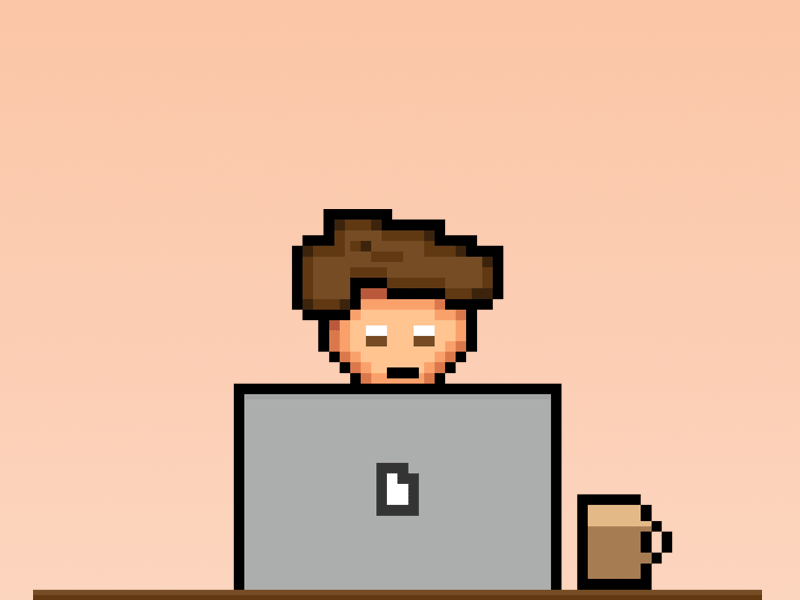

Her er en samling af alle mine projekter, interesser og visioner.
Kig igennem og se, hvad der driver mig fremad

Me , myself and I
Hej! Mit navn er Laurits Munk,
jeg er 23 år gammel og bor i København.
Mine interesser spænder bredt,
men fælles for dem er glæden
ved at dykke ned i egne projekter
La

My Workshop
Jeg studerer IT-arkitektur på KEA
hvor jeg dykker ned i blandt andet systemdesign og kodning.
åbner døren til spændende
Jeg forventer ikke, at det er noget der ændrer sig snart.
Jeg er også lige flyttet ind i en ny lejlighed,
og dette markerer et skub fremad i mit liv.
Klik her for at se det spændende nye kapitel
Section 4
Me , myself and I
Jeg er stolt af at jeg bor i København, det er her hvor jeg har tilbragt hele mit liv.
Jeg forventer ikke, at det er noget der ændrer sig snart.
Jeg er også lige flyttet ind i en ny lejlighed,
og dette markerer et skub fremad i mit liv.
Klik her for at se det spændende nye kapitel

 Tag et kig på min erhvervsbaggrund og CV
Tag et kig på min erhvervsbaggrund og CV